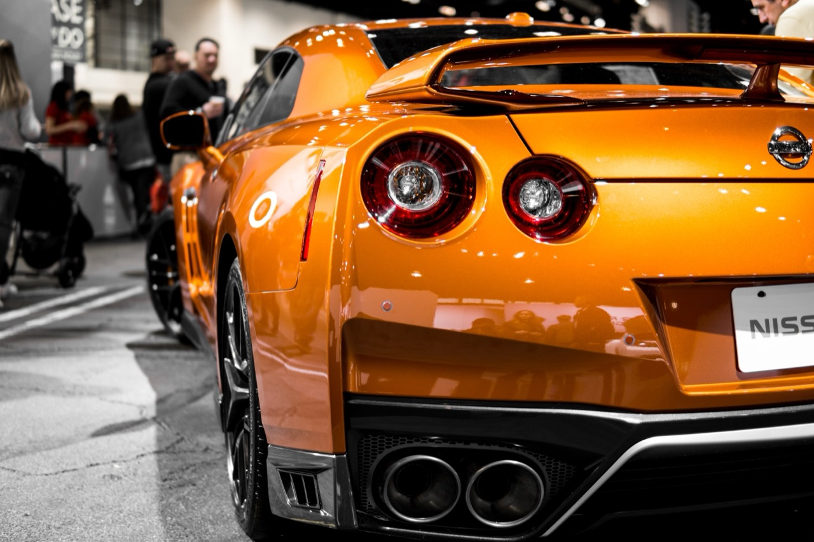
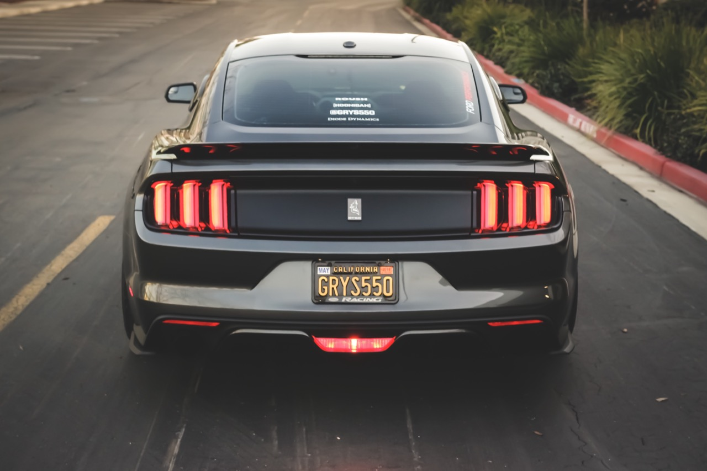

Iconic BMW M3 GTR from "Need for Speed: Most Wanted" Becomes Reality
The transformation of the fictional BMW M3 GTR from the 2005 video game "Need for Speed: Most Wanted" into actual automotive reality represents fascinating intersection of gaming culture, automotive engineering, and the blurring boundaries between virtual and physical realities. The vehicle, which served as protagonist car within the game, possessed distinctive aesthetic qualities and fictional performance characteristics that captured player imagination during the game's substantial cultural moment. Decades after the game's release, the decision to actually construct a real-world version of this beloved virtual vehicle addresses powerful nostalgia while raising interesting questions about the relationship between digital creation and physical manifestation.
The significance of this project extends beyond simple nostalgia to encompass broader conversations about gaming culture's integration into mainstream automobile enthusiasm. The video game's influence on automotive culture, the power of digital design to capture imagination, and the technical challenges of manifesting fictional vehicle specifications in functional reality all merit serious consideration. The project demonstrates how contemporary automotive culture increasingly draws inspiration from gaming while the substantial resources required for such builds demonstrate the high-stakes world of contemporary custom vehicle creation.
The BMW M3 GTR from the game possessed distinctive visual identity—aggressive aerodynamic elements, competitive tuning, and iconic branding—that made it immediately recognizable to game players. Its fictional performance characteristics and cultural significance within gaming contexts created emotional investment among players who might never have considered owning such vehicle in reality. The decision to bring this digital creation into physical reality speaks to the power of gaming's cultural influence and nostalgic attachment to beloved digital experiences.
Gaming Significance and Cultural Impact
"Need for Speed: Most Wanted" represented cultural moment within gaming and racing game culture. The game's narrative focused on underground racing culture, customization, and the pursuit of high-performance vehicles. The BMW M3 GTR functioned as central element within game narrative and protagonist vehicle, becoming iconic symbol within the game's universe. Its distinctive appearance and central role created powerful associations for players who invested time in the game.
The game's cultural moment and enduring memory reflect its success in capturing player imagination and establishing cultural resonance. Years after release, nostalgia for the game drives continued interest and engagement from original players introducing new audiences to remembered favorites. The BMW M3 GTR's iconic status demonstrates gaming's power to create memorable vehicles and emotional attachments to digital creations.

The decision to physically manifest the fictional vehicle demonstrates recognition of gaming culture's influence on broader cultural conversations. Rather than remaining exclusively within digital realm, the vehicle moves into physical space where it can be experienced directly. This translation from virtual to physical represents significant moment reflecting changed cultural attitudes toward gaming and acknowledgment of gaming's role in shaping contemporary culture.
Automotive Engineering and Customization
Bringing the fictional BMW M3 GTR into physical reality required substantial engineering and customization work. The vehicle designers and builders faced challenge of translating game graphics and fictional specifications into functionally sound automotive reality. The game's visual aesthetics, while capturing imagination, offered incomplete technical specifications requiring interpretation and engineering decisions.
The project likely involved taking 2005-era BMW M3 as foundation, then extensively modifying and customizing it to match game aesthetic. Aerodynamic elements, body modifications, engine tuning, suspension adjustments, and visual styling all required careful engineering to achieve both game accuracy and functional reliability. The challenge of matching fictional performance characteristics with real-world automotive physics required technical expertise and creative problem-solving.
The customization work represents sophisticated engagement with modern automotive modification practices. Professional builders and engineers applied contemporary customization techniques, performance enhancements, and aesthetic modifications to create vehicle honoring game design while functioning as drivable automobile. The project demonstrates how gaming inspiration can drive ambitious automotive projects and inspire technical innovation.
Nostalgia and Fan Culture
The project fundamentally emerges from powerful nostalgia and fan appreciation for the game and its memorable vehicles. The decision to build the vehicle reflects recognition of enduring emotional investment by game players and broader automotive culture interest in bringing beloved digital creations to life. The project transforms nostalgic memory into tangible physical reality that fans could encounter and appreciate directly.

The initiative speaks to how gaming culture increasingly merges with other cultural spheres including automotive culture, design, and engineering. Rather than gaming existing as separate entertainment silo, gaming references, inspirations, and properties integrate into broader cultural conversations. The BMW M3 GTR project exemplifies this integration by bringing gaming inspiration into automotive engineering context.
Fan culture surrounding the project likely involved substantial engagement from original game players and broader automotive enthusiasts. Social media documentation of the build process probably generated considerable discussion and excitement about the vehicle's development. The completion and public debut of the actual vehicle would have provided powerful moment for fans seeing beloved digital creation manifested in physical form.
Design Translation and Aesthetic Considerations
The challenge of translating game graphics into physical automotive reality involved navigating fundamental differences between digital representation and physical manifestation. Game graphics simplify and stylize vehicles in ways that may not translate directly or effectively into physical form. The design team faced questions about how faithfully to replicate game appearance versus making adjustments optimizing physical vehicle aesthetics and functionality.
The project likely involved extensive design development exploring different approaches to interpreting game aesthetic in physical context. Photographs, technical drawings, and digital renderings probably informed design evolution. Decision-making about proportions, materials, surface treatments, and functional elements required balancing aesthetic goals with engineering constraints and practical functionality.
The distinctive aggressive styling of the game vehicle—characteristic of racing game aesthetics emphasizing visual drama—required thoughtful interpretation for road-going vehicle. The physical manifestation probably maintains game vehicle's essential identity while making adjustments respecting automotive physics, manufacturing feasibility, and practical functionality for actual vehicle operation.
Cultural Commentary and Implications

The project carries interesting implications about contemporary culture's relationship to gaming and digital creations. The willingness to invest substantial resources in manifesting fictional vehicle suggests recognition of gaming's cultural legitimacy and emotional significance. Rather than dismissing gaming as trivial entertainment, the project validates gaming as source of meaningful inspiration and emotional connection worthy of serious real-world engagement.
The vehicle functions as cultural artifact documenting early 2000s gaming culture and design aesthetics. Its existence in physical form creates permanent record of this particular gaming moment and the designs that captured player imagination. Future historians examining contemporary culture will find vehicles like this valuable documentation of gaming's integration into broader cultural practice.
The project also illustrates how contemporary technology enables previously impossible cultural interventions. Digital 3D modeling, manufacturing techniques, and automotive engineering knowledge make it possible to manifest fictional creations in physical reality in ways that previous generations could not have accomplished. The project demonstrates expanding possibilities when technical knowledge meets cultural enthusiasm.
Where to Experience the Vehicle
The actual BMW M3 GTR, once completed, likely appears at automotive exhibitions, gaming events, and collector car shows. Physical experience of the vehicle provides different engagement compared to digital photography or video documentation. The opportunity to see the vehicle directly and appreciate its details, proportions, and presence in physical space represents meaningful experience for fans of the game and automotive enthusiasts.
Documentation of the build process and completed vehicle likely circulates extensively through social media platforms, automotive forums, and gaming communities. Video documentation particularly suits the project by showing the vehicle in motion and capturing its dynamic presence. Photographs and written coverage provide additional perspectives on the completed vehicle.
The manifestation of the fictional BMW M3 GTR from "Need for Speed: Most Wanted" into physical automotive reality represents significant cultural moment reflecting gaming culture's integration into broader automotive and engineering contexts. The project demonstrates the power of digital design to capture imagination, the technical feasibility of manifesting fictional creations, and the enduring emotional significance of beloved gaming properties. The vehicle stands as testament to gaming's cultural influence, to fan enthusiasm and nostalgia, and to the possibilities emerging when technical expertise meets creative vision inspired by digital experiences. For fans of the game and automotive enthusiasts appreciating ambitious projects merging gaming inspiration with automotive engineering, this BMW M3 GTR represents extraordinary achievement worthy of serious attention and appreciation.